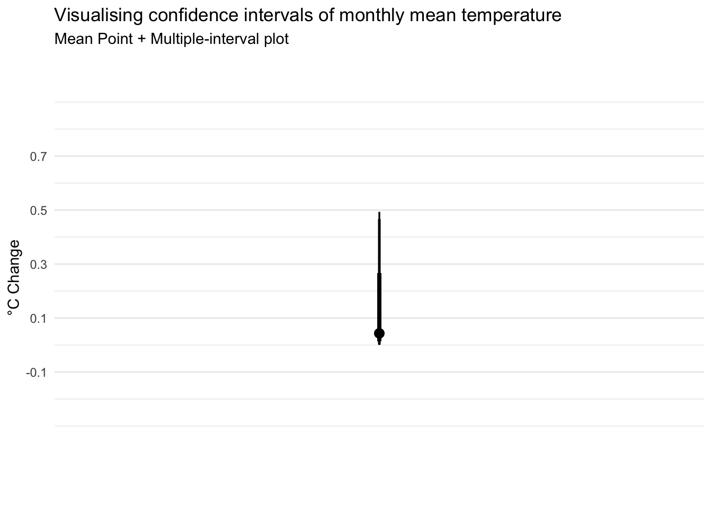

pacman::p_load(tidyverse, haven, ggthemes,
ggdist, plotly, DT,
crosstalk)Take-home Exercise 3: Be Weatherwise or Otherwise
1. Overview
In this take-home exercise, my goal is sto apply my newly acquired knowledge of visual interactivity and visualizing uncertainty methods to create an analytics-driven data visualisation and enhancing user experience in data discovery and visual storytelling utilizing appropriate interactive techniques.

The claims regarding the daily temperature section made above can be validated through this exercise through data visualization techniques and uncertainty methods.
2. Data Preparation
2.1 Installing R packages
In this take-home exercise, these R packages will be loaded using pacman::p_load() function and the code chunk used is as follows:
2.2 Importing Temperature Data
The datasets of historical daily temperature data of the month June in Singapore (Changi) from multiple years are taken from Meteorological Service Singapore website. We will be looking from the years 1983, 1993, 2003, 2013, and 2023. As the ‘Year’ column is in numerical value, the as.factor() function will be used to factorize the variable as the Year value is treated as categorical in this exercise.
temp1 <- read_csv("data/DAILYDATA_S24_202306.csv")
temp2 <- read_csv("data/DAILYDATA_S24_201306.csv")
temp3 <- read_csv("data/DAILYDATA_S24_200306.csv")
temp4 <- read_csv("data/DAILYDATA_S24_199306.csv")
temp5 <- read_csv("data/DAILYDATA_S24_198306.csv")
temp <- rbind(temp1, temp2, temp3, temp4, temp5) %>%
mutate (mean_temp = `Mean Temperature (°C)`) %>%
select(Year, Day, mean_temp)
temp$Year <- as.factor(temp$Year)3. Visualizing Data
Our dataset spans over five years, from 1983 to 2023, presenting a time-series analysis opportunity. This allows us to track trends, essentially the overall direction in which the data points are heading over time. Moreover, it’s crucial to examine the variability within this dataset, which sheds light on the fluctuations or the extent of change between consecutive points across a specific period.
For this project, I’m opting for visualization techniques that best represent time-series data:
Calendar Heatmaps: These lay out the time-series data across a standard calendar layout, making it straightforward to spot daily or monthly patterns at a glance.
Cycle Plots: Cycle plots are particularly adept at illustrating seasonal or cyclical patterns within time-series data. They allow us to dissect the dataset by segments (like days or months) across different years, highlighting recurring trends or deviations that might not be apparent in other forms of visualization.
3.1 Cycle Plot
Show code
avg_temp <- temp %>%
group_by(Year) %>%
summarise(avgvalue = mean(mean_temp))
ggplotly(
ggplot() +
geom_line(data=temp,
aes(x=Day,
y=mean_temp,
group=Year),
colour="black") +
geom_hline(aes(yintercept = avgvalue),
data= avg_temp,
linetype= 5,
colour="red",
size=0.5) +
facet_grid(~Year) +
labs(axis.text.x = element_text(
angle = 45, vjust = 0.5, hjust=1),
title = "Daily Mean Temperature in Changi during June") +
scale_x_continuous(NULL, breaks = seq(0, 30, 5), limits = c(0, 30)) +
xlab("Day") +
ylab("Mean Temperature (°C)") +
theme_minimal()
)The plot above shows the daily mean temperatures of the Changi region in the month of June across multiple years, with each of the years representing a facet to provide a clear comparison of the trends. The red horizontal line indicates the average daily mean temperature of each year.
Using the ggplotly function, the plot is equipped with interactivity features that provide a better and detailed look of each datapoints.
Interactive Visualization
Hover and Tooltip: A tooltip showing detailed information of specific data points can be shown with a simple mouse hover.
Zooming and Panning: Zooming a certain part of region of the plot is made possible to closely examine the data of that specific time stamp.
From the cycle plot, it is evident that the average daily mean temperature from the year 1983 onwards to the year 2023 has been showing an increase, albeit less change is seen from the year 2003 onwards. The changes seen between each decade are listed here:
1983-1993: +0.16°C
1993-2003: +0.5°C
2003-2013: +0.02°C
2013-2023: +0.04°C
The annual mean temperatures for these 5 decades of dataset rose at an average rate of +0.18°C per decade, which hits close to the value claimed by the infographic above (~0.25°C).
3.2 Calendar Heatmap
In order to show the day scale in the calendar heatmap better, the Day value is factorize using as.factor() function to make it a categorical variable.
Show code
temp$Day <- as.factor(temp$Day)
ggplotly(
ggplot(temp,
aes(Day,
Year,
fill = mean_temp)) +
geom_tile(color = "white",
size = 0.1) +
theme_tufte(base_family = "Helvetica") +
scale_fill_gradient(name = "°C",
low = "lightyellow",
high = "orange2") +
labs(x = NULL,
y = NULL,
title = "Daily Mean Temperature in Changi for June") +
theme(axis.ticks = element_blank(),
plot.title = element_text(hjust = 0.5),
legend.title = element_text(size = 8),
legend.text = element_text(size = 6) )
)This calendar heatmap plots the temperature shifts for the month of June over several decades, capturing the essence of temperature shift on a daily basis. Each tile in the chart is tied to a particular day and year, where the color indicates the mean temperature for that day in °C. The color palette transitions from a light yellow to deep orange, illustrating a spectrum from cooler to warmer temperatures. It is noticeable that the lighter shades can be found in the early years before the shades go darker as the year goes up.
The same interactivity features are also applied here using the ggplotly function, providing a more detailed and comprehensive look into each tile, where a hover will show all important information such as the exact mean temperature of that certain day of the year.
4. Visualizing Uncertainties
4.1 Uncertainty of point estimates with interactive error bars
Below is the plot of interactive error bars for the 99% confidence interval of mean daily temperatures by year.
Show code
year_temp <- temp %>%
group_by(Year) %>%
summarise(
n=n(),
mean=mean(mean_temp),
sd=sd(mean_temp)
) %>%
mutate(se=sd/sqrt(n-1))
shared_df = year_temp[, c("Year", "mean", "sd", "se")]
bscols(widths = c(6,6),
ggplotly((ggplot(shared_df) +
geom_errorbar(aes(
x=Year,
ymin=mean-2.58*se,
ymax=mean+2.58*se),
width=0.2,
colour="black",
alpha=0.9,
size=0.5) +
geom_point(aes(
x=Year,
y=mean,
text = paste("Year:", `Year`,
"<br>Avg. Mean Temp:", round(mean, digits = 2),
"<br>95% CI:[",
round((mean-2.58*se), digits = 2), ",",
round((mean+2.58*se), digits = 2),"]")),
stat="identity",
color="red",
size = 1.5,
alpha=1) +
xlab("Year") +
ylab("Average Daily Mean Temp") +
theme_minimal() +
theme(axis.text.x = element_text(
angle = 45, vjust = 0.5, hjust=1)) +
ggtitle("99% Confidence interval of average /<br>daily mean temp by year")),
tooltip = "text"),
DT::datatable(shared_df,
rownames = FALSE,
class="compact",
width="100%",
options = list(pageLength = 10,
scrollX=T),
colnames = c("Year",
"Avg Mean Daily Temp",
"Std Dev",
"Std Error")) %>%
formatRound(columns=c('mean', 'sd', 'se'),
digits=2))4.2 Visualizing uncertainty with ggdist methods
Next, looking at the temperature change between these 5 years, the error bar can be plotted using confidence level of 0.65 , 0.95, and 0.99.
4.2.1 Data Preparation
temp_change <- avg_temp %>%
mutate(change = avgvalue - lag(avgvalue, default = avgvalue[1]))4.2.2 Visualizing the Uncertainty
temp_change %>%
ggplot(aes(x = 1,
y = change)) +
stat_pointinterval(
.width = c(0.65,0.95,0.99)) +
labs(
title = "Visualising confidence intervals of monthly mean temperature",
subtitle = "Mean Point + Multiple-interval plot") +
scale_x_continuous(NULL, breaks = NULL) +
scale_y_continuous("°C Change", breaks = seq(-.1,0.7,0.2), limits = c(-0.5,1)) +
theme_minimal()
From the error bar above, it shows the temperature difference for each year ranges between 0.02°C to 0.5 °C, with the 99% confidence level stating the temperature fluctuation to be between ~0°C to ~0.5°C.
Conclusion
Our analysis doesn’t back the assertion that temperatures have risen by 1.4°C to 4.6°C; instead, we’re 99% certain the actual shift in temperatures ranges from a slight decrease of 0.02 degrees to an increase of only 0.5°C. It is important to note, though, that our dataset spans every 10 years. Examining data from different time frames, other locations, or specific months could potentially lead to different conclusions. So, while our findings might seem to contradict broader claims of temperature increase, they highlight the importance of considering various datasets and perspectives in climate analysis.